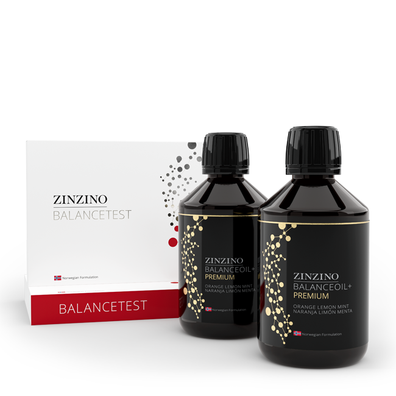

Omega-3
Omega-3: What It Is, What You Can Measure, and What the Numbers Actually Mean
Understand ALA, EPA, DHA, the Omega-3 Index, fatty-acid ratios and what blood measurements can—and cannot—tell you.
Read the guide →Information → Education → Action
Your featured starting point is right here.
Go straight to the kit, browse every verified Shelf destination, or use the Matrix when you want more context. Education is here to support the decision—not stand between you and it.


Shop directly
Seven clear routes to the exact product, collection, shop, or partner destination already verified for this site. Representative imagery is labeled where a card links to a broader collection.
Choose a route
Testing / Start here / Exact product / SKU 910465
The test plus BalanceOil+, with the monthly subscription. You test at home, post it to the lab, and choose from there.
The one most people begin with.

Testing / Collection
Dried blood spot, taken at home, posted to the lab
A direct path to the current home health tests collection.

Omega / Collection
Premium, AquaX, Vegan and Essent+ options
A direct path to the current omega kit collection.

Gut / Collection
Gut health products in the Zinzino shop
A direct path to the current gut health collection.

Nutrition / wellness / Exact product / SKU 302790
X Gold+ in the Zinzino shop
A direct path to the current product destination.

Shop all / Complete shop
Gut, immune, skin and weight management
The broadest path to the current Zinzino shop.
Education / Partner destination
Academy, library and formulas — my partner page
The current destination for the BioLimitless partner resource.
The problem
People are surrounded by health advice, supplements, diets, studies, opinions, and trends. Knowing what to actually do with that information can be difficult.
The answer isn't more noise. It's knowing where to begin.
Information → Education → Action
You don't need every answer today. You need a process for finding your next one.
Information / 01
Understand what you're working with before deciding what to change.
Education / 02
Information without understanding can create more confusion. Learn what it means, explore credible sources, and understand your options.
Action / 03
Take what you've learned and decide what your next meaningful step looks like.

Complete pathway
A framework for taking a more informed, intentional role in your wellness.
Choose your path
I want a credible place to learn about a topic.
Explore the Library →I want to know what a measurement can—and can’t—tell me.
Read the testing guide →I want a simple way to decide where to begin.
Start here →Why I built this
Origin record01 / 01
The turning pointNobody is coming to save me but me.
I got tired of relying on other people to make me feel better.
So I decided to get informed about my situation. I started educating myself about what I found, asking better questions, and looking for credible information.
Then came the most important part: taking action.
The Mindful Matrix didn't come from having all the answers. It came from realizing that I didn't have to wait around for them.
I could learn. I could ask questions. I could make changes. I could take the next step.
Now you can too.
Explore the Library →Get informed
Testing is one possible way to become more informed. It is a starting point for asking better questions—not the entire Mindful Matrix philosophy.
Start here / Optional tool
The test plus BalanceOil+, with the monthly subscription. You test at home, post it to the lab, and choose from there.
Understand before you test
The testing guide explains what is measured, what can affect a result, and where interpretation stops.
The Library
Learn the why behind the choices you're making.
Omega-3
Understand ALA, EPA, DHA, the Omega-3 Index, fatty-acid ratios and what blood measurements can—and cannot—tell you.
Read the guide →Testing
Learn what omega-3 blood tests measure, what can affect a result, and why a number is information—not a diagnosis.
Read the guide →Omega-3
Understand the difference between ALA, EPA and DHA, where food fits, when supplements may be useful, and why changing a biomarker is not the same as guaranteeing a health outcome.
Read the guide →Foundations
Learn what a Supplement Facts panel can establish, what claims and disclaimers do not prove, and how to compare serving size, amounts, ingredients and quality signals.
Read the guide →Keep learning—or explore tools only when there is a clear reason.
Our standards
Open each principle to inspect the standard behind the signal.
If we recommend something, we tell you why.
Whenever possible, education should link back to credible evidence.
What research suggests and what we personally think should not be presented as the same thing.
If we can financially benefit from something, visitors should know.
Uncertainty should not be hidden.
Trust isn't something we claim.It's something we earn.
Partnership disclosure
02 / The Mindful MatrixEducation + contextGavin Reidel — Zinzino Independent Partner. Purchases are completed on Zinzino's own site at their listed retail price. BalanceTest is not available in New York.
That relationship doesn't change our standard: understand first, decide second.

Information → Education → Action
Start figuring out what's right.
Start your journey →Self-care is the real healthcare.